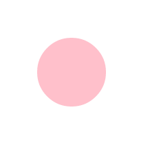
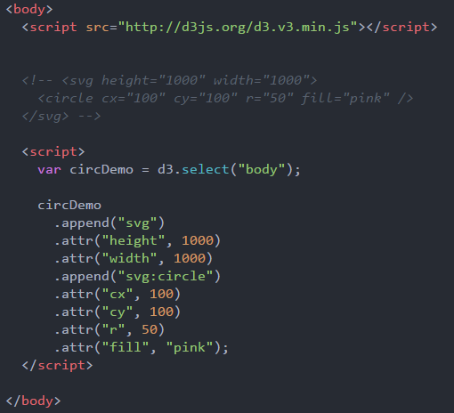
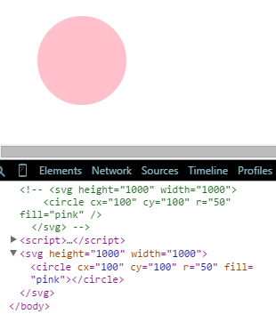
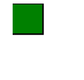
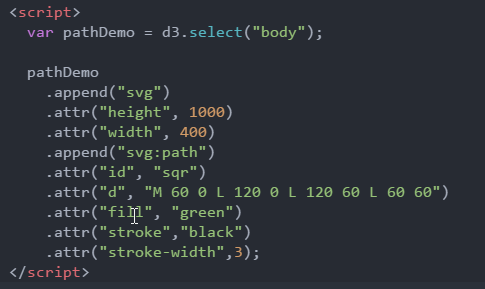
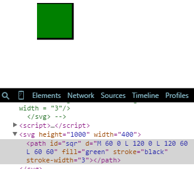
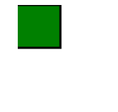
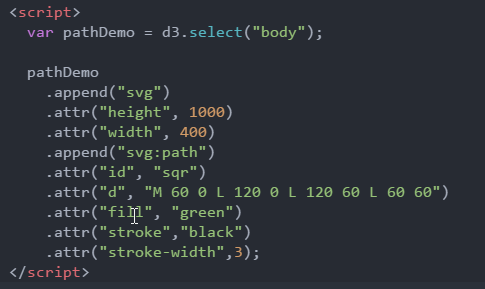
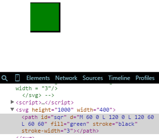

SVG is a popular way to render scalable images for webpages.
There is a lot of documentation and examples online for how to
create and manipulate SVG objects so I won't go into too much
detail about them here.
- SVG is widly used within the D3 library to create custom images.
- The SVG object can be created using html.
- SVG objects can also be rendered in JavaScript.
- This is very important for data binding, a concept we will
approach later.
The following code is an example of how to create an SVG circle using
html.
The result...
This code shows how to create a circle using JavaScript and D3.
Resulting image...
Svg:Path
 




